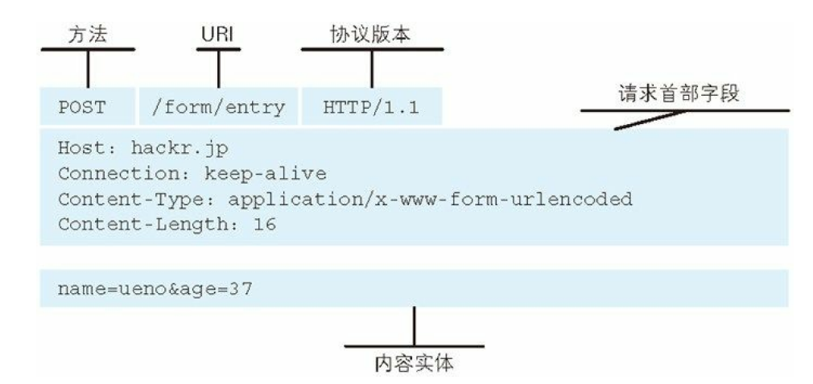
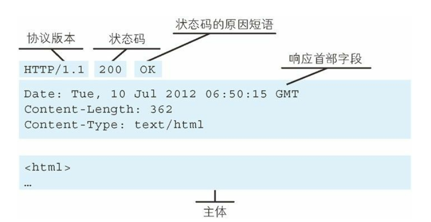

概念
TCP/IP与HTTP
本文试图讲明白HTTP的基础知识，因此让我们从TCP/IP与HTTP的联系入手，先了解TCP/IP的一些基础概念。
首先，关于TCP/IP协议族，HTTP是其子集，TCP/IP被认为是互联网相关的各类协议族的总称。在TCP/IP协议中采用协议分层的模式：应用层、传输层、网络层和数据链路层。在Web开发中，需要了解各层的主要内容有：- -
- 应用层：
HTTP协议，FTP协议，DNS协议 - 传输层：
TCP协议，UDP协议 - 网络层：管理网络流动的数据包，选择传输路径
- 链路层：处理网络的硬件部分，包括控制操作系统等。
对于分层，我们需要知道，数据从应用层到链路层的中间都做了些什么。比如说，传输层使用TCP做了报文分段，加上了TCP首部；而网络层为报文段加上了IP首部等。
TCP/IP协议族中与HTTP密切相关的协议：IP、TCP和DNS。其中，简单来说，DNS用于域名解析，即从域名到IP地址的转换；而TCP用于对HTTP数据报按序分段，形成有序的TCP报文段，并且凭借TCP完成可靠传输。（因此，我们需要知道TCP如何保证可靠传输）；IP主要用于向目标IP地址交互报文的过程中如何完成在网络中的寻址和转发。
URI、URN和URL
很多学习者对URI和URL的区别认识不清，在此之前，包括我本人，也没有正式地学习过这两者的差异，因为在Web开发中，我们接触的叫唤的经常是URL，比如，“访问这个URL会得到什么”之类的说法。现在让我们正式且简单地区分这二者。
- URI，Uniform Resource Iddentifier，统一资源标识符，URI是由某个协议方案表示的资源的定位标识符。
- URN，Universal Resource Name 统一资源名称
- URL，Universal Resource Locator 统一资源定位符
举个例子：
URL代表资源的路径地址，而URI代表资源的名称。
通过URL找到资源是对网络位置进行标识，如：
http://example.org/absolute/URI/with/absolute/path/to/resource.txt
ftp://example.org/resource.txt
通过URI找到资源是通过对名称进行标识，这个名称在某命名空间中，并不代表网络地址，如：
urn:issn:1535-3613
- 绝对URI格式。有绝对就有相对，相对的
URL等。

片段标识符：可标记处以获取的资源中的子资源（文档内的某个位置）
TCP
Web开发相关工作的面试经常会提问到TCP的有关知识，其中TCP与UDP的区别，TCP的可靠传输机制（重点是滑动窗口）。对于TCP连接的建立和断开，经典的问题是“三次握手”和“四次挥手”。在HTTP1.1以前，每次HTTP通信都需要进行TCP连接的建立和断开，现在常用的HTTP1.1已经支持TCP的持久连接了。持久连接的特点是，只要一方没有明确提出断开连接，就保持TCP的连接状态。在HTTP1.1中，所有的TCP连接默认都是持久连接的。另外TCP的pipelining技术（管线化或者流水线）使得客户端可以同时并行发送多个请求，而不是接收一个才发送另一个。
HTTP
HTTP用于客户端和服务端之间的通信，并且通过请求和响应的交换完成通信。对于二者是如何通信的细节，自然是要明白通信的内容是什么，就是请求报文和响应报文都包装了些什么信息。
请求报文：由请求方法，请求URI，协议版本，可选的请求首部字段和内容实体构成。

HTTP方法
- GET：获取资源
- POST：传输实体的主体
- PUT：一般用来传输文件。注意，
HTTP1.1的PUT方法自身不带验证机制，任何人都可以上传文件，存在安全性问题。 - HEAD：和GET一样，但是不会返回报文的主体部分，只返回相关的响应首部。
- DELETE：用来删除文件，DELETE方法按请求的URI删除指定的资源。注意，
HTTP1.1的DELETE方法自身不带验证机制，任何人都可以上传文件，存在安全性问题。 - OPTIONS：用来查询针对请求URI指定的资源支持的方法，即服务端支持客户端使用哪些HTTP方法访问特定的资源。
GET方法会把key-value追加在请求的URL之后。因为URL对长度有限制，所以使用GET方法限制了客户端方的请求参数的数目，并且以这种方式发起请求的话，请求中的参数值是可见的，敏感信息不能以这种方式发起请求。
POST方法则会把请求参数放在请求体中（请求体被封装在请求报文中并完成了编码），客服了长度的限制以及信息的不安全性（请求体对客户端是不可见的）。
响应报文：由协议版本，状态码，解释状态码的短语，可选的首部字段以及实体主体构成。其中，响应首部字段与主体之间有一个空行。

无状态的HTTP
为什么说HTTP是无状态的协议呢？有人解释说，HTTP协议自身（注意这个词）不对请求和响应之间的通信状态进行保存，也就是在HTTP通信过程，HTTP协议本身不会对请求或响应做任何的持久化处理。因此，有一个新的请求就有一个新的响应，即使是重复的请求。但是，接触过web开发的学习者都知道，很多web业务需要保存用户的一些状态，比如用户的登录状态，用户在退出前停留在哪个页面等。
当要求登录认证的Web页面本身无法进行状态的管理，那么每次跳转新页面不是要再次登录，就是要在每次请求报文中附加参数来管理登录状态。
因此，为了让HTTP拥有“保持状态”的功能，Cookie技术就应运而生了，我们后面会特地用一些篇幅阐明Cookie技术。
Cookie
Cookie技术通过在请求和响应报文中写入Cookie信息来控制客户端的状态。Cookie技术会根据从服务端发送的响应报文中的一个Set-Cookie的首部字段信息，通知客户端保存Cookie。以浏览器为例，浏览器收到响应报文中包含Set-Cookie字段，就会根据该响应报文的来源（域名）和Set-Cookie字段的内容存储这些Cookie记录。并且当浏览器再次对这个域名发起请求时，会检查本地存储的Cookie记录，将匹配该域名和请求路径的那些Cookie记录加入到请求首部中发送给服务端。
例如，使用Google浏览器发送对https://www.cnblogs.com/zourong/p/4031904.html的再次请求，我们查看请求报文所携带的Cookies，这些携带的Cookies就存放在浏览器的Cookie记录中。

浏览器存放域名为https://www.cnblogs.com的那些cookie记录，在请求时查询匹配的记录。并且可以看到Google浏览器存储Cookies是不能跨窗口的。

Cookie技术是服务端的一种主动措施，为了记录访问者的状态或者其他信息，从而有利于服务端处理HTTP请求。而浏览器对Cookie技术的支持，使得前端开发者不需要手动添加针对某个域名的Cookie记录，一切交给浏览器完成（浏览器在本地查询Cookie记录，匹配所请求域名和路径的那些Cookie，将这些记录添加到请求的首部中）。如下图，请求报文中使用的是cookie，而服务端是set-cookie。

服务端使用了Set-Cookie之后，显然也需要有相应的措施处理HTTP请求报文中携带的Cookie记录，而服务端不像浏览器这样的客户端具有自动存储管理Cookie的功能，所以服务端开发者需要手动处理HTTP请求所携带的Cookie。服务端在响应报文中设置Cookie记录时，已经在服务器记录了“向谁发送的”，从而当新的HTTP请求到来时，服务端就需要检查是哪个客户端发来的请求，并且将其携带的Cookie值与服务端记录的进行对比，最后得到客户端的状态。可以理解为，服务端记录了状态，客户端通过Cookie告知服务端“之前停留在哪个状态”，从而继续那个状态。
服务端设置Cookie的时候，还可以通过其httponly属性，禁止浏览器脚本读取Cookie，即Cookie值只有浏览器可见。使用Cookie还需要注解经典的XSS跨站脚本攻击。该攻击的原理正得意于浏览器对Cookie的支持，攻击者可以使用cookie记录冒充用户（用户登录状态）访问那些需要登录授权的页面。
Session
Session，即会话，表示客户端与服务端保持通信的短期过程。我们从上面cookie的讲解中可以知道，如果使用cookie来维护用户的登录状态，按照原先简单的做法，就是将账号和密码等用户信息作为cookie值保存在浏览器中，可以实现下次登录时可以自动登录，或者得以访问那些需要登录认证才能访问的资源。而将用户信息保存在cookie中是一种不安全的行为，毕竟需要防范cookie劫持的攻击。
既然客户端保存cookie是不安全的，那么，如果使用cookie来管理会话状态呢？
答案是将用户信息保存在服务器端，而使用一个SessionId与用户信息绑定，然后记录在服务端。如此，通过sessionId就可以查询用户信息。将这样的sessionId作为set-cookie的值返回给客户端，客户端就不需要保存重要的用户信息，而只需要保存这样一个sessionId。显然，sessionId也可能被盗用。因此，保证sessionId的安全性也很重要，为此，sessionId常使用难以推测的字符串，同时服务端也需要管理sessionId的有效期。
总结一下使用cookie管理session的步骤
- 客户端把用户ID和密码等登录信息放入请求报文的实体部分，通常以
POST方法发送给服务端，这时就会使用HTTPS通信。 - 服务端接收到数据后，进行身份验证，通过验证后为之生成一个用以标示用户的
sessionId，然后将该sessionID与用户的认证状态绑定后记录在服务端（一般是数据库）。服务端向客户端响应时，在set-cookie内写入sessionID。 - 客户端接收到服务端发送来的
sessionId后，将其作为cookie保存到本地。下次访问服务端时，浏览器就会自动发送该cookie，所以sessionId也就随之发送到服务端。服务端也就可以凭借该sessionId进行状态认证。
从上面所叙述的来看，session（会话）只是一个表示客户端和服务端通信期间的抽象概念，并不是某种技术或者实体。理解这里session机制，其本质是cookie技术的应用。
笔者使用Java进行服务端开发，因此后续会有一些博文记录
spingboot中使用cookie和session的知识。HTTP首部
HTTP报文内容
HTTP报文本身是由多行数据构成的字符串文本，HTTP报文大致可分为报文首部和报文主体，二者通过空行划分。

请求行：包括HTTP方法，请求的URI和HTTP版本
状态行：包括响应结果的状态码，原因短语和HTTP版本
编码提升传输速率
HTTP报文可以通过编码压缩，从而提升传输速率。只不过编码操作需要由计算机完成，因此会消耗更多的CPU等资源。使用编码压缩时，是对实体主体进行编码压缩，为此我们需要理解和区别“报文主体”和“实体主体”。
- 报文：是HTTP通信的基本单位。
- 实体：作为请求或响应的有效数据载荷被传输，其内容由实体首部和实体主体组成。
HTTP报文的主体用于装裹传输请求或响应的实体主体。这么说有点抽象，个人理解，所谓“实体”可以理解为传输的原始数据，当实体主体没有被编码压缩的情况下，报文主体就是装载了实体的主体，而当实体的主体被编码压缩之后再放进报文主体中，这时的报文主体就与实体主体不相同了。所以，报文主体可以理解为报文中用于装载数据的那部分，而实体主体可以理解为实际传输的原始数据部分。
HTTP用于对传输实体主体的编码也称为“内容编码”，一般有以下几种：gzip(GNU zip)，compress (UNIX系统的标准压缩),deflate (zlib), identity（不进行编码）。
MIME
MIME，Multipurpose Internet Mail Extensions，多用途因特网邮件扩展机制，它允许处理文本，图片，视频等多个不同类型的数据。
Multipart，多部分对象集合，可以用来容纳多份不同类型的数据。HTTP协议采纳了多部分对象集合，所以发送一份报文的主体可以含有多种类型的实体。多部分对象集合包括的对象有
multipart/form-data：web表单文件上传时使用。（常用）multipart/byteranges：状态码206响应报文包含多个范围的内容时使用。（Partial Content，部分内容）。这种实体对象类型实际不常用。
内容协商
当一个web应用存在多个语言版本时，根据浏览器的默认语言，访问同一个URI的Web页面会返回不同的对应的语言版本，这样的机制称为内容协商。所以内容协商机制是客户端与服务端就响应的资源内容进行商定，然后根据商定的规则，返回给客户端对应的版本。这种内容协商包括：资源的语言（accept-Language），字符集（accept-Charset），编码方式（accept-Encoding）等。
所以，通常可以在请求报文的首部看到accept或者accept-xxx这样的字段，这就是客户端通过请求报文与服务端进行内容协商，要求返回符合客户端能接受的格式。
HTTP状态码
状态码是指出现在响应报文的响应行中的状态码，HTTP状态码是对客户端发起的HTTP请求的一种反馈信息，通过状态码可以通知客户端HTTP请求的处理结果：请求成功与否，服务端处理是否正常等。状态码包括表示状态的3位数字和原因短语。
| 状态码 | 类别 | 原因短语 |
|---|---|---|
| 1XX | Informational 信息性状态码 | 接收的请求正在处理 |
| 2XX | Success 成功状态码 | 请求正常处理完毕 |
| 3XX | Redirection 重定向状态码 | 需要进行附加操作以完成请求 |
| 4XX | Client Error 客户端错误状态码 | 服务器无法处理请求 |
| 5XX | Server Error 服务器错误状态码 | 服务器处理请求时发生错误 |
虽然状态码有几十种，但的常见的也就是10多种，接下来，我们介绍这常见的10多种状态码。
| 状态码 | 原因短语 | 备注 |
|---|---|---|
| 200 | OK | 请求正常处理 |
| 204 | No Content | 请求处理成功，但没有资源返回，此时浏览器显示的页面不发生更新 |
| 301 | Moved Permanently | 永久性重定向。资源的URI已经更新，通知浏览器 更新资源所在的新的URI（书签等） |
| 302 | Found | 临时性重定向。资源URI已更新，告知客户端使用新的URI |
| 303 | See Other | 与302类似，但是要求使用GET方法获取资源 |
| 304 | Not Modified | 客户端发送的附带条件的请求，URI没有满足条件的资源 |
| 400 | Bad Request | 请求报文中存在语法错误 |
| 401 | Unauthorized | 发送的请求需要通过HTTP认证 |
| 403 | Forbidden | 对URI的请求访问被服务器拒绝了，(访问权限受限) |
| 404 | Not Found | 服务器上没有对应的请求资源（或不存在对应的URI的请求处理） |
| 500 | Internal Server Error | 服务器在执行处理请求时发生错误，服务端代码有bug等 |
| 503 | Service Unavailable | 服务器暂时处于超负荷或正在停机维护 |
注意：304虽然属于3XX系列，但是它并不是重定向，而是根据某个条件查找资源。例如，if-match，If-Modified-Since等
HTTP首部
HTTP报文首部为客户端和服务端通信提供至关重要的信息，虽然平时开发中很多首部字段我们看不到，这是因为浏览器和操作系统为我们默默完成了添加的工作。本节主要介绍HTTP报文中的一些重要的首部字段。

HTTP首部字段根据实际用途可以划分为4种类型：通用首部字段，请求首部字段，响应首部字段和实体首部字段。其中，通用首部字段是请求报文和响应报文都会用到的共同字段；而实体首部字段是针对请求报文或响应报文的实体部分而使用的首部，补充一些与实体有关的信息。

常用的实体首部字段有：
| 首部字段名 | 说明 |
|---|---|
| Allow | 资源可支持的HTTP方法 |
| Content-Encoding | 实体主体适用的编码方式 |
| Content-Language | 实体主体的自然语言 |
| Content-Length | 实体主体的大小（字节） |
| Content-Type | 实体主体的媒体类型 |
| Expires | 实体主体过期的日期 |
| Last-Modefied | 资源最后被修改的日期 |
注意：Cookie，Set-Cookie不是HTTP1.1中定义的首部字段。
常用首部字段的应用
| 首部字段 | 说明 |
|---|---|
| Cache-Control | 操作浏览器的或者缓存服务器的缓存机制 |
| Connection | 管理持久连接，Keep-Alive或Close |
| Accept | 客户端能够处理的媒体类型及媒体类型的优先级 |
| Accept-Chartset | 客户端支持的字符集及字符集处理的相对有限顺序。 |
| Other Accept-xxx | |
| User-Agent | 用来传达浏览器的种类 |
| Allow | 通知客户端，服务器能够支持的请求方法，如GET,HEAD |
| Content-Type | 说明了实体主体内对象的媒体类型 |
| Expires | 服务端通知客户端资源失效的日期 |
为Cookie服务的首部字段
- Set-Cookie字段的属性
| 属性 | 说明 |
|---|---|
| NAME=VALUE | 赋予Cookie的名称和对应值（必需项） |
| expires=DATE | Cookie的有效期（不指明则默认浏览器关闭前，即浏览器会话cookie） |
| path=PATH | 将服务器上的文件目录作为Cookie的适用对象（默认是相对URI） |
| domain=域名 | 默认是创建Cookie的服务器的域名 |
| Secure | 限定仅在HTTPS安全通信时才会发送Cookie |
| HttpOnly | 禁止Javascript脚本访问Cookie，为了防止XSS攻击 |
- Cookie字段属性
当客户端想要获得HTTP状态管理支持时，就会在HTTP请求首部中添加这一字段，并填充从服务端接收到的cookie记录。
以上就是本文介绍的HTTP，部分图片来自《图解HTTP》一书。HTTP协议是现今Web开发必知必会的网络协议，而基于HTTP的RESTful API更是当先前后端分离项目中的前端后通信的重要接口。关于RESTful接口的设计，将会在另一篇学习笔记《学习RESTful API开发》中详细介绍。
HTTPS是HTTP和SSL或TSL的加强版，关于HTTPS的原理也是Web开发者应该知道的。显然知道通信安全的HTTPS还是不够的，对于一些常见的web攻击和防御也应当有所了解。